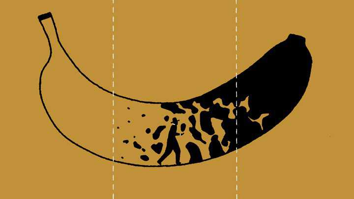

An Ode to Young Adulthood
There’s this drawing of a banana. Toward the stem it is fresh, premature, and budding with potential; toward the other end it is weathered and well-defined, filled with the hard-earned sweetness and history that a full life bestows.
Two dashed lines split the picture into thirds, and middle age is the centerpiece. Before it, the world pulls you in with its long and wide arms, with its promises of invention and discovery, grievance and uncertainty, joy and adventure; afterward, the world opens itself up again, only to allow you to return that which you have reaped.
Along the leftward line is where we – the transitory adolescents, the precocious rebels, the wannabe adults, the adults in denial – tread, that unmarked territory in which adulthood takes its shape. We’re not as settled as the middle-aged seem to be, but we’re not so volatile anymore either.
Hangovers still leave us with the memories we had hoped to create. Bedtime is now a welcome luxury, though we desperately yearn for someone to share our dreams with. Wise is something of a compliment, though we prefer to be woke instead. Our wallets are slim, but that doesn’t concern us; we remain rich in the currency of time, even if we aren’t yet its best consumers.
The brimming horizon of the future is within our line of sight, though what illuminates the long nights are the incandescent friendships of days long gone by. We don’t yet know how to navigate the slippery slopes of love, but we wouldn’t ever consider any other endeavor to be worthy of our youth. Like gamblers betting on hope, we swing precariously from one moment to the next, only vaguely aware of the consequences of our actions. Slightly jaded, the thrill isn’t something we live for anymore, but it still has the ability to awaken the younger part of ourselves.
And when that happens, should we have the sense to hang onto it for as long as possible, we make room for the beautiful to emerge.

In playful response to an article posted on The Atlantic, “An Ode to Middle Age”